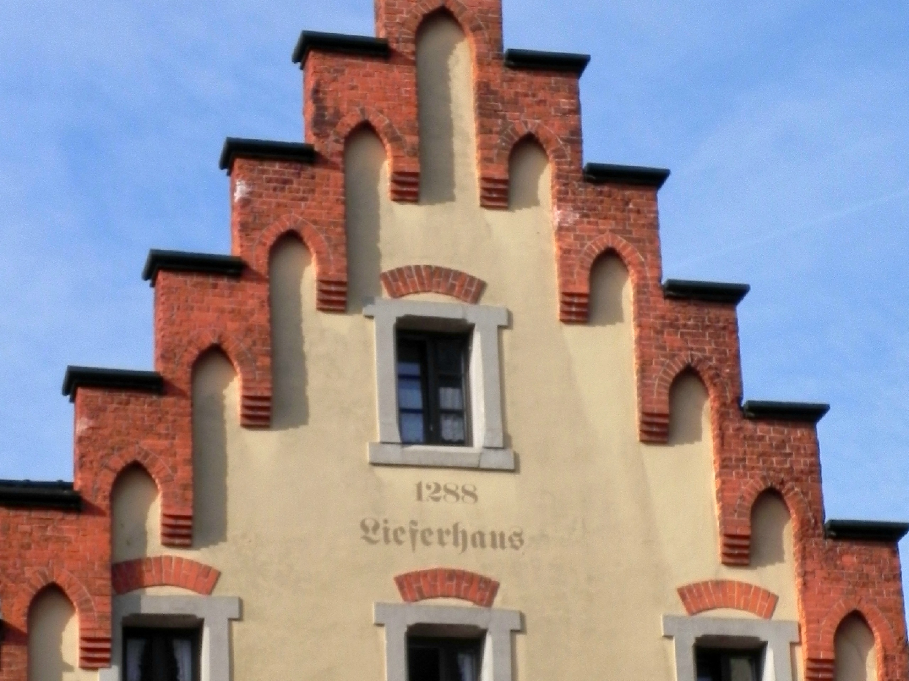
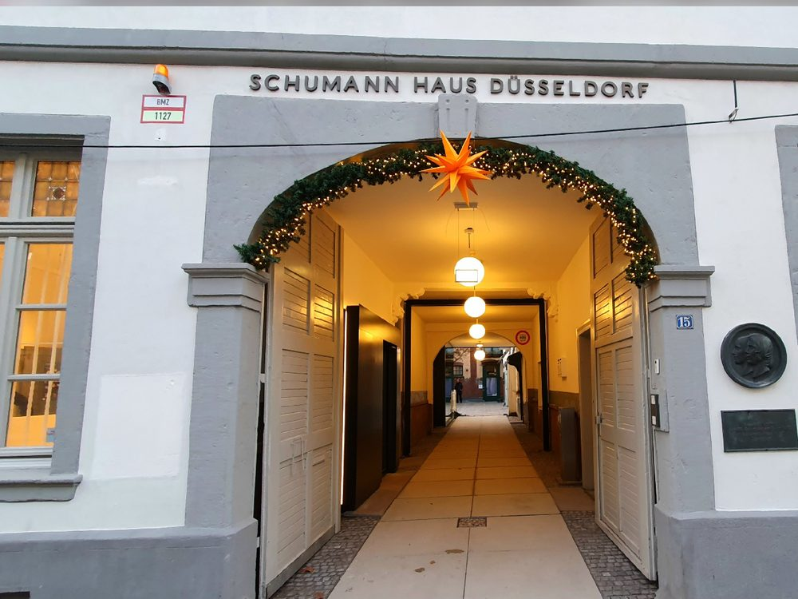
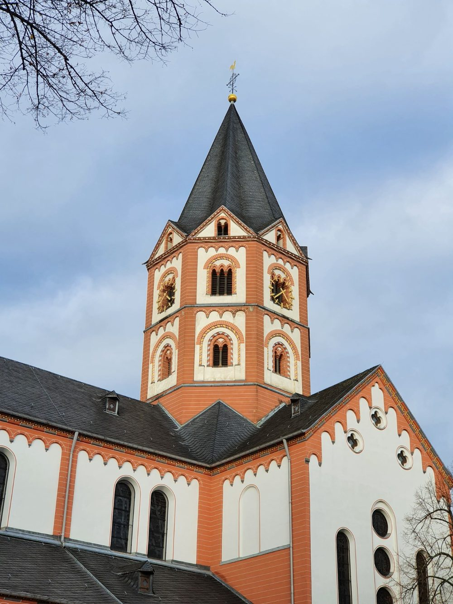
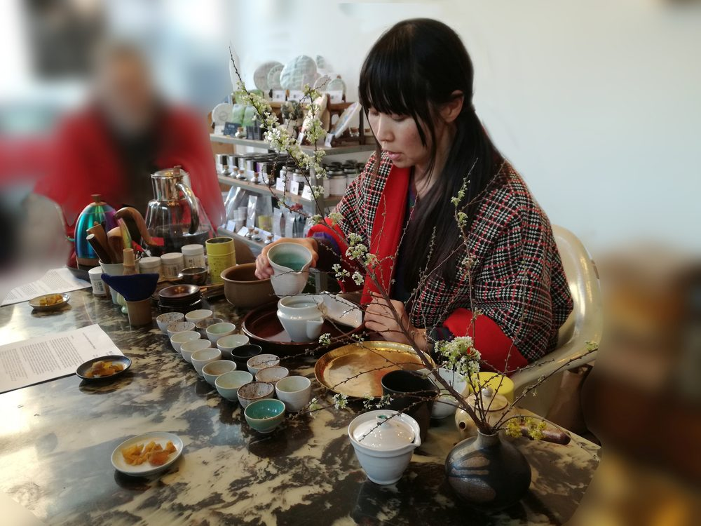
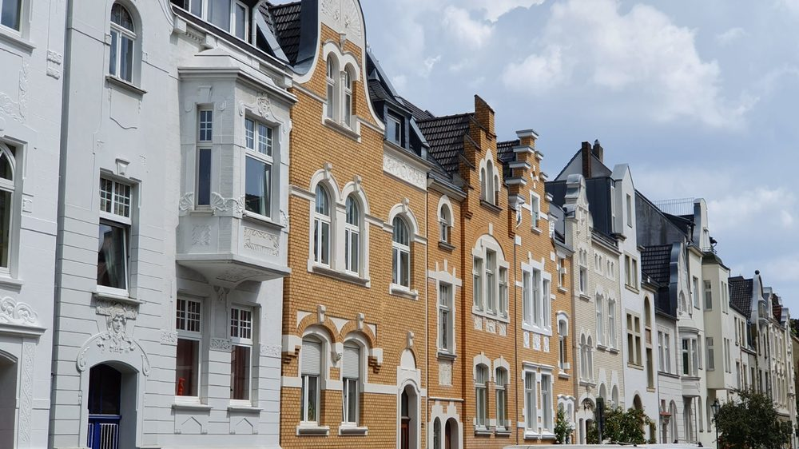

Unsere Themen
Stadtviertel
Düsseldorf ist keine Stadt, sondern viele. Zwischen Oberkassel und Gerresheim, zwischen Carlstadt und Nordpark liegen Welten – jede mit eigener Geschichte, eigenem Tempo, eigenem Ton. Wir zeigen sie Ihnen.
Düsseldorfs Stadtviertel
Vielfältige Stadtteile, spannende Geschichten und lokales Leben entdecken.
Von japanischer Kultur über moderne Architektur bis zur historischen Altstadt – entdecke die Highlights Düsseldorfs in einer unvergesslichen Tour.
-

Altstadt
Rathaus • Burgplatz • Längste Theke der Welt
-
Bahnhofsviertel
Kunstwerke • Musik • Street-Art
-
Benrath
Schloss • Gärten • Barock
-

Carlstadt
Stadtpalais • Kultur • Markt
-
Flingern
Kreativ • Urban • Authentisch
-

Gerresheim
Basilika • Industrie-Erbe • Tradition
-
Golzheim
Künstler • Architektur
-
Grafenberg
Industrie-Erbe • Eisenbahn • Wald
-

Japanisches Viertel
Little Tokyo • Sushi + Ramen • Manga
-
Oberbilk
Multikulturell • Stahlindustrie • Arbeiter
-

Oberkassel
Jugendstil • Eleganz • Bohème
-
Pempelfort
Kultur • Hofgarten • Cafés
-
Unterbilk
Szene • Lifestyle • Ex-Arbeiterviertel
Rund um die Königsallee
Pracht, Geschichte und Architektur entlang Düsseldorfs berühmtestem Boulevard.
Zwei Wege, dieselbe Straße zu sehen – und zwei sehr verschiedene Geschichten.
-
Luxus und Glamour rund um die Kö
Mode • Boulevard • Wasserlauf
-
Unterschätzte Kunstmeile Königsallee
Skulpturen • Galerien • Architektur
Parks, Gärten und Friedhöfe
Grüne Orte der Ruhe, Schönheit und Geschichte in und um Düsseldorf.
Grüne Führungen – und stille. Auch Friedhöfe erzählen Stadtgeschichte.
-
Ehrenhof und Hofgarten
Museen • Tonhalle • Parkanlage
-
Nordpark
Japanischer Garten • Aquazoo • Weite
-
Volksgarten
Grün • Ruhe • Stadtgeschichte
-
Nordfriedhof
Grabmale • Stadtgeschichte • Stille
-
Friedhof Golzheim
Gartenkunst • Geschichte • Stille
Nicht das Richtige gefunden?
Gerne gestalten wir eine individuelle Führung nach Ihren Wünschen.